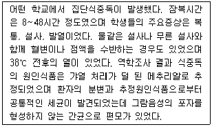
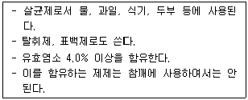
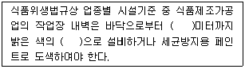
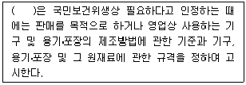
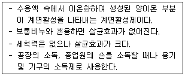
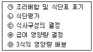
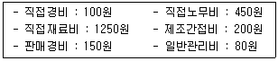
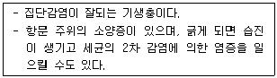

조리산업기사(공통) (2007-08-05 기출문제)
1과목: 식품위생 및 관련법규
1. 보툴리누스 식중독 및 식중독균에 대한 설명으로 틀린 것은?
- 독소는 열에 쉽게 파괴되는 단순단백질로서 80℃에서 20분, 100℃에서 1~2분의 가열로 파괴된다.
- 혐기성균으로 열과 소독약에 저항성이 강한 아포를 생산한다.
- 특이증상으로 무력감, 권태감, 현기증이 보이며 증상이 발전되면 약시, 복시가 나타난다.
- 백신, 항독소 등을 이용한 면역 및 치료가 불가능하다.
(정답률: 43%)

2. 다음의 식중독 사례에서 추정할 수 있는 식중독균의 설명으로 틀린 것은?

- 방서방충시설을 철저히 하고 청결을 유지하면 균의 오염을 예방할 수 있다.
- 열에 약하여 60℃의 온도로 20분 이상 가열하면 사멸된다.
- 독소형 식중독으로 독소는 일반적인 가열로 파괴되지 않는다.
- 소, 돼지, 말, 개, 고양이, 오리 등의 가축이 균을 보유하고 있다.
(정답률: 53%)
3. 다음 중 보존료가 아닌 것은?
- 파라옥시안식향산부틸
- 소르빈산칼륨
- 데히드로초산
- 프로피온산에틸
(정답률: 38%)
4. 식용얼음의 대장균에 대한 규격은?
- 50mL 중 음성
- 50mL 중 10 이하
- 100mL 중 음성
- 1mL 중 100이하
(정답률: 72%)
5. 황색포도상구균이 생산하는 엔테로톡신에 대한 설명으로 옳은 것은?
- 100℃에서 20분간 가열하여도 파괴도지 않는다.
- 사람의 분변을 거쳐 식품에 오염되는 감염형 식중독 독소이다.
- 독소는 단백질 분해효소에 의해서 쉽게 분해된다.
- -20℃ 이하에서도 독소가 정상적으로 생성된다.
(정답률: 62%)
6. 아래에서 설명하는 첨가물은?

- 아염소산나트륨
- 과산화수소
- 이산화염소
- 차아염소산나트륨
(정답률: 87%)
7. 식품위생법규상 유상수거대상 식품은?
- 유통 중인 부정ㆍ불량식품 등을 수거할 때
- 수입식품 등을 검사할 목적으로 수거할 때
- 식품 등의 기준 및 규격 제정ㆍ개정을 위한 참고용으로 수거할 때
- 부정불량식품 등을 압류 또는 수거ㆍ폐기하여야 할 때
(정답률: 79%)
8. 알레르기성 식중독의 원인 물질은?
- 히스타민(histamine)
- 엔테로톡신(enterotoxin)
- 아플라톡신(aflatoxin)
- 트리메틸아민(trimethylamine)
(정답률: 84%)
9. 조리사 면허가 없는 자가 조리사 명칭을 허위로 사용했을 경우의 벌칙은?
- 1년 이상의 징역
- 3년 이하의 징역 또는 3천만원 이하의 벌금
- 5년 이하의 징역 또는 5천만원 이하의 벌금
- 7년 이하의 징역 또는 1억원 이하의 벌금
(정답률: 79%)
10. 아래 ( )안에 들어갈 말이 알맞게 짝지어진 것은?

- 0.5, 내염성
- 1.0, 내열성
- 1.5, 내수성
- 2.0, 내향성
(정답률: 86%)
11. 다음은 식품위생법의 기준과 규격에 관한 내용이다. ( )안에 알맞은 것은?

- 시장ㆍ군수ㆍ구청장
- 보건복지부장관
- 보건소장
- 식품의약품안전청장
(정답률: 78%)
12. 일반음식점의 영업신고는 누구에게 하는가?
- 시장ㆍ군수ㆍ구청장
- 식품의약품안전청장
- 보건소장
- 시ㆍ도지사
(정답률: 93%)
13. 조리사가 업무정지기간 중에 조리사 업무를 한 경우 행정처분 기준은?
- 시정명령
- 면허취소
- 업무정지 1월
- 업무정지 1년
(정답률: 85%)
14. 다음 중 식품이 부패되는 과정에서 암모니아, 아민, 황화수소, 메르캅탄 등으로 분해되어 불쾌한 냄새를 발생시키는 영양소는?
- 지방
- 단백질
- 비타민
- 탄수화물
(정답률: 86%)
15. 식품위생법령상 조리사를 두어야 하는 영업은?
- 복어를 조리ㆍ판매하는 영업
- 중소기업 내에서 운영되는 집단급식소 영업
- 영업장 면적이 50제곱미터 이하인 휴게음식점 영업
- 영업장 면적이 100제곱미터 이하인 일반음식점 영업
(정답률: 96%)
16. 곰팡이독과 중독증상이 바르게 연결된 것은?
- aflatoxin - 신장독
- citrinin - 신경독
- ochratoxin - 간장독
- patulin - 피부염
(정답률: 33%)
17. DDT와 같이 주로 살충제로 쓰이며 잔류성이 강하고 지용성이므로 동물의 지방조직에 축적되어 만성중독을 일으킬 수 있는 농약은?
- 유기인제농약
- 유기염소제농약
- 유기수은제농약
- 유기불소제농약
(정답률: 46%)
18. 다음 중 오물 등의 소독에 사용하는 크레졸수의 농도로 가장 적합한 것은?
- 3~5%
- 6~10%
- 12~18%
- 20~30%
(정답률: 82%)
19. 식품의 부패판정검사와 항목의 연결이 잘못된 것은?
- 관능검사 : 색, 냄새, 맛 측정
- 생물학적 검사 : 생균수 측정
- 물리적 검사 : K값, VBN측정
- 화학적 검사 : TBA, amine측정
(정답률: 64%)
20. 소독제의 구비조건으로 바람직하지 않은 것은?
- 살균력이 강해야 한다.
- 표백성이 없어야 한다.
- 용해성이 낮아야 한다.
- 사용방법이 간편해야 한다.
(정답률: 77%)
2과목: 식품학
21. 다음 중 버터의 향미성분은?
- 멘톨(menthol)
- 바닐린(vanillin)
- 디아세틸(diacetyl)
- 옥테놀(octenol)
(정답률: 61%)
22. 단백질을 가열하였을 때 일어나는 변성의 일반적인 특징이 아닌 것은?
- 점도가 증가한다.
- 용해도가 증가한다.
- 단백질의 구조에 변화가 생긴다.
- 효소작용에 대한 감수성이 증가하여 소화가 잘 된다.
(정답률: 46%)
23. 효소에 대한 일반적인 설명으로 틀린 것은?
- 살아있는 생물체에서 만들어지며 화학반응을 촉매한다.
- 일종의 단백질로서 가열하면 변성되어 불활성화된다.
- 한 가지 효소는 두 가지 이상의 반응을 촉매하는 반응특이성이 있다.
- 활성을 나타내는 최적온도는 30~40℃ 정도이다.
(정답률: 50%)
24. 다음 중 수용성 비타민이 아닌 것은?
- Vitamin A
- Vitamin B2
- Vitamin C
- 엽산
(정답률: 63%)
25. 다음 중 성인의 필수아미노산이 아닌 것은?(오류 신고가 접수된 문제입니다. 반드시 정답과 해설을 확인하시기 바랍니다.)
- 발린(valine)
- 히스티딘(histidine)
- 이소루신(isoleucine)
- 리신(lysine)
(정답률: 75%)
26. 유연한 포장용기에 조리ㆍ가공한 여러 가지 식품을 밀봉한 후 고압솥에서 가압·가열 살균하여 상업적 무균상태를 부여한 파우치 상품은?
- 레토르트 식품
- 병조림 식품
- 통조림 식품
- 기능성 식품
(정답률: 89%)
27. 유체의 흐름에 대한 저항을 의미하는 물성 용어는?
- 점성(viscosity)
- 탄성(elasticity)
- 소성(plasticity)
- 점탄성(viscoelasticity)
(정답률: 71%)
28. 다음 중 단단한 젤리가 만들어지는 조건이 아닌 것은?
- 펙틴분자량이 클수록
- 높은 온도에서 끓일수록
- Ca2+를 첨가할수록
- pectin esterase를 작용시킬수록
(정답률: 53%)
29. 간장 발효 시 착색은 주로 어느 반응에 의한 것인가?
- 캐러멜화 반응
- 마이야르 반응
- 아스코르빈산 산화반응
- 폴리페놀 산화반응
(정답률: 81%)
30. 식품의 색소에 대한 내용으로 틀린 것은?
- 카로티노이드는 광선과 알칼리용액에 의해서 파괴된다.
- 안토시아닌은 산성용액에서 적색으로 변한다.
- 안토잔틴은 알칼리에 의해 황색으로 된다.
- 클로로필은 산과 반응하면 페오피틴이 된다.
(정답률: 39%)
31. 유지 또는 식품에 들어 있는 지방질의 산패(rancidity)와 관계가 없는 현상은?
- 항산화제를 첨가하였을 때 나타나는 현상
- 나쁜 냄새를 흡수하는 현상
- 가수분해에 의해 변하는 현상
- 산화에 의해 변하는 현상
(정답률: 47%)
32. 계란을 가열할 때 난황 주위가 푸르게 변색하는 현상에 대한 설명으로 틀린 것은?
- 난백의 황화수소와 난황의 철이 결합하여 황화철을 만든다.
- pH가 알칼리성일 때 더 빨리 생성된다.
- 높은 온도에서 긴 시간 가열하면 방지할 수 있다.
- 오래된 달걀일수록 더 잘 발생한다.
(정답률: 72%)
33. 자유수와 결합수에 대한 설명 중 틀린 것은?
- 결합수는 용매로서 작용하지 않는다.
- 결합수는 0℃ 이하에서도 잘 얼지 않는다.
- 자유수는 건조로 쉽게 건조되지 않는다.
- 자유수는 미생물의 생육ㆍ증식에 이용된다.
(정답률: 81%)
34. 불포화지방산에 대한 설명으로 맞는 것은?
- 팔미트산, 스테아르산 등이 있다.
- 불포화지방산이 많으면 요오드값이 낮다.
- 융점과는 큰 관계가 없다.
- 천연 불포화지방산의 이중결합은 보통 cis형이다.
(정답률: 52%)
35. 겔(gel)의 분산상과 분산매를 순서대로 바르게 짝지어진 것은?
- 고체 - 액체
- 액체 - 고체
- 고체 - 고체
- 액체 - 액체
(정답률: 82%)
36. 단백질의 용해도는 등전점에서 어떻게 변하는가?
- 등전점에서 가장 낮다.
- 등전점에서 가장 높다.
- 산성 쪽으로 갈수록 낮아진다.
- 알칼리 쪽으로 갈수록 낮아진다.
(정답률: 40%)
37. 생선을 조리 시 식초를 넣는 이유가 아닌 것은?
- 비린내를 제거하기 위해
- 단백질을 응고시키기 위해
- 보존성을 향상시키기 위해
- 가시를 단단하게 하기 위해
(정답률: 94%)
38. MSG에 대한 설명으로 틀린 것은?
- 인체 내에서 가수분해 되어 글루탐산이 된다.
- 최저 정미농도(역치)는 0.03% 정도이다.
- 식품첨가물공전상의 명칭은 글루타민산나트륨이다.
- 산미, 고미를 강화시키고 식품의 자연 풍미를 약화시킨다.
(정답률: 83%)
39. 칼슘의 흡수를 촉진시키는 인자가 아닌 것은?
- 비타민 D(vitamin D)
- 리신(lysine)
- 젖산(lactic acid)
- 피틴(phytin)
(정답률: 40%)
40. 콩류에 대한 설명으로 옳은 것은?
- 두류는 메티오닌(methionine) 함량이 많고 리신(lysine) 함량은 적다.
- 생콩에는 트립신(trypsin)을 활성화 시키는 단백질이 있다.
- 콩나물은 대두에 비하여 비타민 C의 함량이 많다.
- 콩 단백질은 대부분 물에 녹지 않는다.
(정답률: 67%)
3과목: 조리이론 및 급식관리
41. 단체급식소에서 효율적인 작업을 위한 조리기구 및 기기의 조건으로 잘못된 것은?
- 복잡한 기계는 유지관리를 위하여 쉽게 분해되지 않아야 한다.
- 가능하면 용도가 다양하여야 한다.
- 가격과 유지관리비가 경제적이어야 한다.
- 기기는 디자인이 단순하고 사용하기에 편리하여야 한다.
(정답률: 84%)
42. 다음 중 구이의 장점이 아닌 것은?
- 수용성 성분의 용출이 적다.
- 당질의 캐러멜화로 맛있는 향기를 낸다.
- 식품의 살균효과가 있다.
- 식품의 속까지 빠르게 고루 익는다.
(정답률: 55%)
43. 당류의 감미도가 큰 것부터 순서대로 나열된 것은?
- fructose ＞ sucrose ＞ glucose ＞ maltose ＞ lactose
- fructose ＞ glucose ＞ sucrose ＞ maltose ＞ lactose
- sucrose ＞ fructose ＞ glucose ＞ maltose ＞ lactose
- fructose ＞ sucrose ＞ glucose ＞ lactose ＞ maltose
(정답률: 72%)
44. 전분의 노화에 대한 설명으로 틀린 것은?
- 0~4℃에서 잘 일어난다.
- 수분 함량 30~60%일 때 잘 일어난다.
- 아밀로펙틴(amylopectin)의 함량이 많을수록 잘 일어난다.
- 산성에서 잘 일어난다.
(정답률: 52%)
45. 다음 중 주방의 면적을 산출 할 때 필요한 조건과 거리가 먼 것은?
- 조리기기
- 식단형태
- 배식 수
- 식당의 방위
(정답률: 56%)
46. 고기 조직의 연화작용에 관계하는 효소가 아닌 것은?
- 시니그린(sinigrin)
- 파파인(papain)
- 피신(ficin)
- 브로멜린(bromelin)
(정답률: 82%)
47. 다음 중 비원가 항목인 것은?
- 식품공장 임차료
- 기계 수선비
- 법인세
- 전력비
(정답률: 65%)
48. 다음과 같은 특성을 가진 비누는?

- 중성비누
- 역성비누
- 우유비누
- 산성비누
(정답률: 81%)
49. 식단작성의 순서가 바르게 된 것은?

- ㉠ - ㉣ - ㉡ - ㉤ - ㉢
- ㉣ - ㉤ - ㉢ - ㉠ - ㉡
- ㉢ - ㉠ - ㉣ - ㉡ - ㉤
- ㉡ - ㉢ - ㉤ - ㉠ - ㉣
(정답률: 72%)
50. 다음 중 식품의 매운맛 성분이 잘못 연결된 것은?
- 후추 - 차비신(chavicine)
- 생강 - 진저론(zingerone)
- 겨자 - 알리신(allicin)
- 고추 - 캅사이신(capsaicin)
(정답률: 87%)
51. 아래와 같은 조건일 때 제조원가는 얼마인가?

- 1700원
- 1800원
- 1900원
- 2000원
(정답률: 50%)
52. 고등어 100g을 쇠고기로 대치할 때 필요한 쇠고기의 양은 약 얼마인가? (단, 100g당 고등어 단백질은 18g, 쇠고기 단백질은 20.1g이다.)
- 92.2g
- 89.6g
- 78.5g
- 74.2g
(정답률: 38%)
53. 식품의 4가지 기본적인 맛이 아닌 것은?
- 짠맛
- 단맛
- 쓴맛
- 매운맛
(정답률: 86%)
54. 조리 시 설탕의 용도에 대한 설명으로 틀린 것은?
- 식품의 색과 풍미를 좋게 한다.
- 식품의 보존성을 높여준다.
- 달걀흰자의 거품을 낼 때 거품이 잘 일어나게 한다.
- 펙틴의 젤리 형성을 촉진한다.
(정답률: 65%)
55. 지방 중에 물이 분산되어 있는 유화액(W/O형)은?
- 마요네즈
- 샐러드드레싱
- 마가린
- 난황
(정답률: 71%)
56. 식품을 감별하여 양질의 식품을 선택하는 방법 설명으로 틀린 것은?
- 육류 : 색과 윤기를 지니며 냄새가 없고 탄력성이 있어야 한다.
- 알류 : 표면이 거칠고 광택이 없어야 한다.
- 채소류 : 특유한 향기와 색깔을 지니지 않아야 한다.
- 감자 : 모양이 고른 것으로 싹이 트지 않아야 한다.
(정답률: 85%)
57. 매출액이 30만원이고 한계이익이 12만원일 때 한계이익률(P/V)은 얼마인가?
- 40%
- 70%
- 170%
- 150%
(정답률: 63%)
58. 식품재료의 적정 발주량에 대한 설명으로 틀린 것은?
- 1회 발주량이 많으면 연간 저장비용은 증가한다.
- 1회 발주량이 적으면 연간 주문비용은 증가한다.
- 경제적 발주량(EOQ:Economic Order Quantity)은 연간 저장비용과 주문비용의 교차점이다.
- 저장품의 경우 재고량이나 주문비용의 고려 없이 적정 발주량을 결정할 수 있다.
(정답률: 70%)
59. 다음 중 교차오염이 일어날 수 있는 위험성이 가장 높은 조리작업은?
- 주방 바닥에 소쿠리를 놓고 흐르는 물에 상추를 씻었다.
- 재료를 세척할 때 상추를 먼저 세척하고 난 후 쇠고기-고등어-닭고기의 순서로 세척하였다.
- 칼과 도마는 생식품용은 빨간색, 조리식품용은 노란색으로 구분하여 사용하였다.
- 흙이 묻은 당군과 감자는 오염작업구역에서 전처리하였다.
(정답률: 68%)
60. HACCP의 7원칙 12절차 중 원칙 1에 해당하는 것은?
- 공정흐름도 작성
- 용도확인
- HACCP팀 구성
- 위해요소 분석
(정답률: 70%)
4과목: 공중보건학
61. 인수공통전염병과 매개 동물의 연결이 틀린 것은?
- 결핵 - 소
- 광견병 - 개
- 탄저 - 양
- 렙토스피라증 - 양
(정답률: 67%)
62. 전염병 예방법상 제1군 전염병에 속하는 것은?(관련 규정 개정전 문제로 여기서는 기존 정답인 1번을 누르면 정답 처리됩니다. 자세한 내용은 해설을 참고하세요.)
- 장출혈성대장균감염증
- 유행성이하선염
- 수막구균성수막염
- 후천성면역결핍증(AIDS)
(정답률: 46%)
63. 모기와 관련된 질병으로 나열된 것은?
- 말라리아, 황열, 사상충증
- 말라리아, 발진열, 페스트
- 발진티푸스, 재귀열, 일본뇌염
- 신증후군출혈증, 성홍열, 탄저
(정답률: 77%)
64. 다음 중 검역전염병으로만 나열된 것은?
- 장티푸스, 두창, 홍역
- 콜레라, 페스트, 황열
- 세균성이질, 장티푸스, 황열
- 장티푸스, 결핵, 페스트
(정답률: 54%)
65. 다음 중 호흡기를 통해 세균이 침입하여 감염되는 전염병은?
- 폴리오
- 일본뇌염
- 결핵
- 발진티푸스
(정답률: 60%)
66. 열중증 중 체내의 수분과 염분의 손실로 인해 사지경련. 이명, 구기, 현기증 등의 증세가 나타나는 것은?
- 열허탕증
- 울열증
- 열쇠약증
- 열경련증
(정답률: 63%)
67. 망막을 자극하여 물체의 식별과 색채를 구별할 수 있도록 하는 것은?
- 감마선
- 자외선
- 가시광선
- 적외선
(정답률: 86%)
68. 다음 중 바퀴의 생태에 대한 설명으로 틀린 것은?
- 군거생활을 한다.
- 야간활동성이다.
- 잡식성이다.
- 완전변태를 한다.
(정답률: 82%)
69. 기생충의 형태별 분류상 원충류에 해당하는 것은?
- 회충
- 폐흡충
- 무구조충
- 이질아메바
(정답률: 62%)
70. 순화독소(toxoid)를 인공능동면역원으로 이용하는 질병은?
- 결핵, 백일해
- 탄저, 콜레라
- 홍역, 폴리오
- 파상풍, 디프테리아
(정답률: 67%)
71. 다음에서 설명하는 기생충은?

- 회충
- 편충
- 구충
- 요충
(정답률: 69%)
72. 기생충과 중간숙주의 연결이 틀린 것은?
- 간흡충 - 민물고기
- 유구조충 - 돼지고기
- 말라리아 - 모기
- 광절열두조충 - 담수어
(정답률: 32%)
73. 다음 중 LD50이란?
- 전체치사량
- 반수치사량
- 전체치사농도
- 반수치사농도
(정답률: 75%)
74. 대기오염의 2차성 오염물질은?
- 오존(O3)
- 이산화황(SO2)
- 이산화질소(NO2)
- 먼지(dust)
(정답률: 40%)
75. 공기의 조성 중 가장 많은 비율을 차지하는 것은?
- 산소
- 질소
- 이산화탄소
- 아르곤
(정답률: 78%)
76. 쓰레기 처리방법 중 다이옥신의 발생우려가 가장 높은 것은?
- 매립법
- 퇴비법
- 소각법
- 비료화법
(정답률: 74%)
77. 공장폐수 등에 함유될 수 있으며 미나마타병을 일으키는 물질은?
- 수은
- 카드뮴
- 납
- 비소
(정답률: 73%)
78. 먹는 물 수질기준 및 검사 등에 관한 규칙상 수돗물의 탁도 기준은?
- 1.0 NTU를 넘지 아니할 것
- 0.5 NTU를 넘지 아니할 것
- 0.3 NTU를 넘지 아니할 것
- 0.1 NTU를 넘지 아니할 것
(정답률: 46%)
79. 산성비의 기준이 되는 pH 수치는?
- pH 4.6
- pH 5.6
- pH 6.6
- pH 7.6
(정답률: 63%)
80. 컴퓨터의 스크린에서 방사되는 해로운 전자기파에 의해 두통, 시각장애 등의 증세가 나타나는 것은?
- 비소중독
- 잠함병
- VDT증후군
- 참호족
(정답률: 87%)